Cluster sample
Largest, median and singleton clusters. Ask of each: would one explanation genuinely serve every statement here?
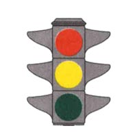
53Segnalazioni semaforiche
VEROIn presenza della luce semaforica rossa i veicoli devono arrestarsi
VERONei semafori sistemati in verticale la luce rossa si trova in alto, in quelli posti in orizzontale si trova a sinistra
VERONel semaforo la luce rossa può essere di dimensioni più grandi delle altre
VEROQuando è accesa la luce rossa del semaforo bisogna arrestarsi prima della striscia trasversale d'arresto
VERODurante il periodo di accensione della luce rossa i veicoli non devono superare la striscia di arresto
FALSOLa luce rossa accesa del semaforo consente di svoltare a destra con prudenza, dando precedenza ai pedoni che attraversano la strada
FALSOLa luce rossa accesa del semaforo consente di ripartire lentamente quando appare il giallo per gli altri veicoli
FALSOLa luce rossa accesa del semaforo consente di impegnare l'incrocio con molta prudenza a condizione che non ci siano altri veicoli o pedoni
FALSOLa luce rossa accesa del semaforo consente l'attraversamento dell'incrocio, purché sia libero
FALSOLa luce rossa accesa del semaforo obbliga ad affrettarsi per liberare velocemente l'incrocio
VEROQuando è accesa la luce verde del semaforo in figura è possibile svoltare a sinistra, dando la precedenza ai veicoli che arrivano di fronte
VEROQuando è accesa la luce verde del semaforo in figura si può svoltare a destra
VEROQuando è accesa la luce verde del semaforo in figura si può proseguire diritto
VEROQuando è accesa la luce verde del semaforo in figura si può impegnare l'incrocio, soltanto avendo la certezza di poterlo sgomberare prima dell'accensione della luce rossa
… and 39 more
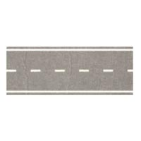
34Segnaletica orizzontale
VEROLa striscia bianca discontinua in figura può essere superata
VEROLa striscia bianca discontinua in figura divide la carreggiata in due corsie
VERONelle strade a doppio senso con due corsie la striscia bianca discontinua in figura divide i sensi di marcia
VEROLa striscia bianca discontinua in figura consente, in caso si voglia sorpassare, di occupare momentaneamente l'altra corsia di marcia
VEROLa striscia bianca discontinua in figura consente l'inversione di marcia, in condizioni di sicurezza, se la strada è a doppio senso
VEROLa striscia bianca discontinua in figura consente la svolta a sinistra
FALSOLa striscia bianca discontinua in figura consente di circolare stando a cavallo di essa
FALSOLa striscia bianca discontinua in figura divide la strada da una pista ciclabile
FALSOLa striscia bianca discontinua in figura si trova in vicinanza di tutti i passaggi a livello
FALSOLa striscia bianca discontinua in figura può essere sostituita da una serie di "chiodi" per segnaletica stradale
FALSOLa striscia discontinua in figura può essere sostituita con alcuni "chiodi" o catadiottri, messi a distanza di 50 centimetri
VEROIn una strada a senso unico di circolazione con la segnaletica indicata in figura si può sorpassare anche superando la striscia di mezzo
VEROIn una strada a senso unico di circolazione con la segnaletica indicata in figura si può sorpassare anche in curva
VEROIn una strada a senso unico di circolazione con la segnaletica indicata in figura la carreggiata è divisa in due corsie
… and 20 more
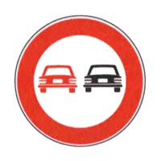
34Segnali di divieto
VEROIl segnale raffigurato consente ad un'autovettura di sorpassare un motociclo
VEROIl segnale raffigurato si può trovare sia sulle strade urbane che su quelle extraurbane
VEROIl segnale raffigurato vieta di sorpassare autocarri
VEROIl segnale raffigurato consente di sorpassare i ciclomotori
VEROIl segnale raffigurato vieta il sorpasso fra autoveicoli, anche se la manovra può compiersi entro la semicarreggiata
FALSOIl segnale raffigurato consente ad un motociclo di sorpassare un'autovettura
FALSOIl segnale raffigurato indica che la corsia di destra è riservata ai veicoli lenti
FALSOIl segnale raffigurato consente di sorpassare un'autovettura purché non si oltrepassi la striscia continua
FALSOIl segnale raffigurato vieta ad un motociclo di sorpassare una bicicletta
FALSOIl segnale raffigurato consente il sorpasso tra autovetture se non vi è la striscia bianca continua
VEROIn presenza del segnale raffigurato un autocarro può sorpassare un motociclo
VEROIn presenza del segnale raffigurato un'autovettura può sorpassare un ciclomotore
VEROIl segnale raffigurato consente il transito agli autotreni, autoarticolati ed autosnodati
VEROIn presenza del segnale raffigurato è vietato sorpassare anche gli autoveicoli di massa complessiva inferiore a 3,5 tonnellate
… and 20 more
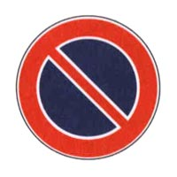
34Segnali di divieto
VEROIl segnale raffigurato è posto nei luoghi dove la sosta è vietata
VEROIl segnale raffigurato vieta la sosta sulle strade urbane dalle ore 8.00 alle ore 20.00, salvo diversa indicazione
VEROIl segnale raffigurato può essere integrato da pannelli per indicarne l'inizio, il proseguimento o la fine
VEROIl segnale raffigurato cessa di validità dopo il primo incrocio, se non ripetuto
VEROIl segnale raffigurato consente la fermata
VEROIl segnale raffigurato consente la sosta nel tratto precedente
VEROIl segnale raffigurato, opportunamente integrato, può vietare la sosta nei centri abitati dalle ore 0,00 alle 24,00
FALSOIl segnale raffigurato, se posto sul lato sinistro di una strada a senso unico, vieta la sosta anche sul lato destro
FALSOIl segnale raffigurato preannuncia un divieto di fermata
FALSOIl segnale raffigurato non vale per i motocicli ed i ciclomotori
FALSOIn presenza del segnale raffigurato è sempre prevista la rimozione forzata del veicolo
FALSOIl segnale raffigurato indica che la sosta è regolamentata con l'uso di parchimetri a pagamento
FALSOIl segnale raffigurato consente la sosta ai residenti
FALSOIl segnale raffigurato consente la sosta esponendo il tagliando emesso da un parchimetro
… and 20 more
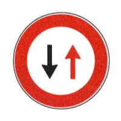
33Segnali di precedenza
VEROIl segnale raffigurato impone, nelle strettoie, di dare precedenza ai veicoli provenienti dal senso opposto
VEROIl segnale raffigurato preannuncia, in presenza di lavori, di dare precedenza ai veicoli provenienti dal senso opposto
VEROIl segnale raffigurato preannuncia che bisogna dare la precedenza ai veicoli provenienti di fronte
VEROIl segnale raffigurato obbliga a dare la precedenza ai veicoli provenienti dal senso contrario
VEROIl segnale raffigurato impone di dare la precedenza nei sensi unici alternati
VEROIl segnale raffigurato, in una strada a doppio senso, precede una strettoia che permette il transito di una sola fila di veicoli
VEROIl segnale raffigurato preannuncia che la circolazione non può svolgersi contemporaneamente nei due sensi
FALSOIl segnale raffigurato preannuncia che la circolazione è ammessa nei giorni pari in un senso e nei giorni dispari nell'altro
FALSOIl segnale raffigurato preannuncia il diritto di precedenza nei sensi unici alternati
FALSOIl segnale raffigurato, su una carreggiata a senso unico, preannuncia l'inizio del doppio senso di circolazione
FALSOIl segnale raffigurato preannuncia la fine del senso unico di circolazione
FALSOIl segnale raffigurato preannuncia la fine del diritto di precedenza nei sensi unici alternati
FALSOIl segnale raffigurato si trova su strade a senso unico di circolazione
VEROIl segnale raffigurato è un segnale di prescrizione
… and 19 more
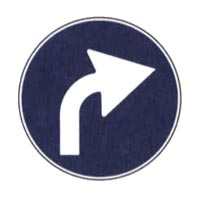
29Segnali di obbligo
VEROIl segnale raffigurato è un preavviso di obbligo di svoltare a destra
VEROIl segnale raffigurato preannuncia che non è consentito proseguire diritto o svoltare a sinistra
VEROIl segnale raffigurato precede un incrocio con obbligo di svoltare a destra
VEROIl segnale raffigurato preannuncia un incrocio ove non è consentito proseguire diritto
VEROIl segnale raffigurato preannuncia che non è consentito girare a sinistra
VEROIl segnale raffigurato è un segnale di prescrizione
VEROIl segnale raffigurato preannuncia l'unica direzione consentita
VEROIl segnale raffigurato è un segnale d'obbligo
VEROIl segnale raffigurato può essere integrato con un pannello che indica la distanza dal punto in cui vige l'obbligo
FALSOIl segnale raffigurato indica che non è consentito svoltare a destra al prossimo incrocio
FALSOIl segnale raffigurato obbliga ad andare diritto o svoltare a destra
FALSOIl segnale raffigurato prescrive l'obbligo di passare a destra di un ostacolo
FALSOIl segnale raffigurato indica una curva pericolosa a destra
FALSOIl segnale raffigurato presegnala una confluenza a destra
… and 15 more
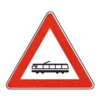
28Segnali di pericolo
VEROIl segnale raffigurato preannuncia di moderare la velocità perché poco più avanti si potrebbe incrociare un tram
VEROIl segnale raffigurato posto fuori dei centri abitati, preannuncia una linea tranviaria non regolata da semafori
VEROIl segnale raffigurato, posto nei centri abitati, preannuncia l'incrocio con una linea tranviaria non regolata da semafori
VEROIl segnale raffigurato preannuncia, fuori e dentro i centri abitati, una linea tranviaria non regolata da semafori
VEROIl segnale raffigurato preannuncia una linea tranviaria che incrocia la carreggiata
VEROIl segnale raffigurato preannuncia una linea tranviaria che riduce lo spazio utile per la circolazione dei veicoli
VEROIn presenza del segnale raffigurato, il conducente deve porre maggiore attenzione per non intralciare la marcia del tram
VEROIn presenza del segnale raffigurato, il conducente deve prestare maggiore attenzione, perché potrebbe incrociare un tram
FALSOIl segnale raffigurato preannuncia un eventuale transito di filobus
FALSOIl segnale raffigurato può essere integrato con un dispositivo a due luci rosse che si accendono alternativamente
FALSOIl segnale raffigurato obbliga a dare la precedenza ai filobus
FALSOIl segnale raffigurato vieta il sorpasso dei tram
FALSOIl segnale raffigurato preannuncia un passaggio a livello ferroviario senza barriere
FALSOIl segnale raffigurato preannuncia una zona in cui possono circolare solo i veicoli in servizio pubblico
… and 14 more
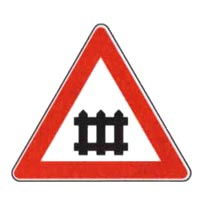
27Segnali di pericolo
VEROIl segnale raffigurato preannuncia un passaggio a livello con barriere o con semibarriere
VERODopo il segnale raffigurato, se ci sono le semibarriere, è installato un dispositivo a luci rosse lampeggianti
VEROIl segnale raffigurato preannuncia un attraversamento ferroviario protetto da barriere o semibarriere, qualunque sia il numero dei binari
VEROIl segnale raffigurato preannuncia un attraversamento ferroviario munito di barriere o semibarriere
VERODopo il segnale raffigurato si può trovare un dispositivo acustico che avverte della chiusura delle barriere o delle semibarriere
VEROIl segnale raffigurato è posto, di norma, 150 metri prima del passaggio a livello
VEROIn presenza del segnale raffigurato è necessario moderare la velocità
VERODopo il segnale raffigurato, se ci sono le barriere, è installato un dispositivo a luce rossa fissa
VEROLa figura rappresenta un segnale di pericolo
FALSOIl segnale raffigurato preannuncia l'incrocio con una linea tranviaria
FALSOIl segnale raffigurato preannuncia una strada senza uscita
FALSOIl segnale raffigurato obbliga ad arrestarsi se le luci rosse poste in prossimità delle barriere o delle semibarriere sono spente
FALSOIl segnale raffigurato indica una deviazione obbligatoria
FALSOIl segnale raffigurato permette di transitare tra una barra e l'altra se le semibarriere sono chiuse, dopo aver verificato che non ci sono treni in arrivo
… and 13 more
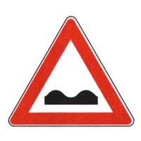
27Segnali di pericolo
VEROIl segnale raffigurato preannuncia un tratto di strada deformata
VEROIl segnale raffigurato può essere associato con un segnale di limite massimo di velocità
VEROIl segnale raffigurato preannuncia un tratto di strada con pavimentazione irregolare
VEROIl segnale raffigurato preannuncia una strada in cattivo stato
VEROIl segnale raffigurato è un segnale di pericolo
VEROIl segnale raffigurato si trova, in genere, 150 metri prima di un tratto di strada con fondo irregolare
VEROIl segnale raffigurato preannuncia un tratto di strada dissestata
VEROIl segnale raffigurato, se a fondo giallo, è usato in presenza di cantieri stradali
FALSOIl segnale raffigurato è un segnale di prescrizione
FALSOIl segnale raffigurato preannuncia una discesa pericolosa
FALSOIl segnale raffigurato preannuncia più curve consecutive
FALSOIl segnale raffigurato preannuncia una serie di dossi
FALSOIl segnale raffigurato preannuncia una forte variazione di pendenza della strada
FALSOIl segnale raffigurato preannuncia una doppia curva
… and 13 more
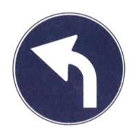
26Segnali di obbligo
VEROIl segnale raffigurato preannuncia che non è consentito proseguire diritto
VEROIl segnale raffigurato preannuncia che non è consentito svoltare a destra
VEROIl segnale raffigurato è posto prima di un incrocio
VEROIl segnale raffigurato precede un segnale di DIREZIONE OBBLIGATORIA A SINISTRA
VEROIl segnale raffigurato è un segnale d'obbligo
VEROIl segnale raffigurato è un segnale di prescrizione
FALSOIl segnale raffigurato preannuncia un senso unico
FALSOIl segnale raffigurato è un segnale di indicazione
FALSOIl segnale raffigurato indica che è obbligatorio passare a sinistra dell'ostacolo
FALSOIl segnale raffigurato è posto all'inizio di una strada in pendenza
FALSOIl segnale raffigurato indica l'obbligo di cambiare corsia
FALSOIl segnale raffigurato presegnala una curva pericolosa a sinistra
VEROIl segnale raffigurato è preavviso dell'obbligo di svoltare a sinistra
VEROIl segnale raffigurato precede un incrocio in cui non è consentito proseguire diritto o girare a destra
… and 12 more
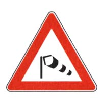
26Segnali di pericolo
VEROIl segnale raffigurato presegnala un tratto di strada soggetto a forti raffiche di vento laterale
VEROIl segnale raffigurato preannuncia la possibilità di forti raffiche di vento laterale all'uscita da una galleria
VEROIl segnale raffigurato preannuncia la presenza di un viadotto esposto ad improvvise raffiche di vento laterale
VEROIl segnale raffigurato preannuncia zone soggette a forti ed improvvise raffiche di vento laterale
VEROIl segnale raffigurato preannuncia un pericolo che è maggiore per i veicoli telonati o furgonati
VEROIl segnale raffigurato preannuncia di procedere con prudenza tenendo saldamente il volante
FALSOIl segnale raffigurato preannuncia la presenza di aeroplani a bassa quota
FALSOIl segnale raffigurato preannuncia un tratto di strada vicino ad un aeroporto
FALSOIl segnale raffigurato preannuncia la presenza di un campo d'aviazione
FALSOIl segnale raffigurato indica da quale direzione proviene il vento
FALSOIl segnale raffigurato preannuncia la presenza, nelle vicinanze, di un parco giochi
FALSOIl segnale raffigurato preannuncia la presenza di capannoni industriali nelle vicinanze
VEROIl segnale raffigurato preannuncia un pericolo che, in caso di forte vento laterale, è maggiore per i veicoli che trainano rimorchi
VEROIl segnale raffigurato preannuncia, in caso di forte vento laterale, un pericolo che è maggiore per i veicoli a due ruote
… and 12 more
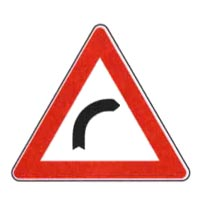
26Segnali di pericolo
VEROIl segnale raffigurato preannuncia una curva pericolosa a destra
VEROIl segnale raffigurato è posto, di norma, a 150 metri dal punto di inizio della curva
VEROIl segnale raffigurato può essere integrato con pannello con la scritta TORNANTE
VEROIl segnale raffigurato preannuncia un tratto di strada pericoloso per ridotta visibilità
VEROIl segnale raffigurato richiede di moderare la velocità
VEROIl segnale raffigurato preannuncia un tratto di strada pericoloso
FALSOIl segnale raffigurato preannuncia una serie di curve pericolose di cui la prima a destra
FALSOIl segnale raffigurato preannuncia un obbligo di svolta a destra
FALSOIl segnale raffigurato è un segnale di prescrizione
FALSOIl segnale raffigurato preannuncia un tratto di strada in salita
FALSOIl segnale raffigurato preannuncia un cambio di corsia
FALSOIl segnale raffigurato preannuncia una curva a sinistra
FALSOIl segnale raffigurato, posto su una strada a doppio senso di circolazione, impone di portarsi sulla parte sinistra della carreggiata per affrontare meglio la curva
FALSOIl segnale raffigurato è posto, di norma, a 5 metri dall'inizio della curva
… and 12 more
1Fermata, sosta, arresto e partenza
FALSOLa sosta è consentita sulle aree destinate ai veicoli per il carico e lo scarico di cose, nelle ore stabilite, soltanto se di breve durata
1Fermata, sosta, arresto e partenza
FALSOLa sosta è consentita negli spazi riservati alla fermata o alla sosta dei veicoli per persone invalide purché di breve durata
1Fermata, sosta, arresto e partenza
VEROLa sosta è vietata nelle corsie o carreggiate riservate ai mezzi pubblici
1Fermata, sosta, arresto e partenza
VEROLa sosta è vietata nelle aree pedonali urbane
1Fermata, sosta, arresto e partenza
VEROLa sosta è vietata nelle zone a traffico limitato per i veicoli non autorizzati
1Fermata, sosta, arresto e partenza
VEROLa sosta è vietata davanti ai cassonetti dei rifiuti urbani
1Fermata, sosta, arresto e partenza
FALSOBrevi soste sono consentite nelle aree pedonali urbane
1Fermata, sosta, arresto e partenza
FALSOLa sosta così come la fermata sono vietate davanti ai cassonetti dei rifiuti urbani
1Fermata, sosta, arresto e partenza
VERONei centri abitati il conducente non deve lasciare in sosta un rimorchio staccato dalla motrice, salvo diversa segnalazione
1Fermata, sosta, arresto e partenza
FALSOLa sosta è vietata in corrispondenza dei distributori di carburante, sino a 5 metri prima e dopo, anche quando i distributori sono chiusi
1Fermata, sosta, arresto e partenza
VEROLa sosta negli spazi riservati allo stazionamento e alla fermata di autobus, filobus e veicoli circolanti su rotaia comporta, tra l'altro, la sottrazione di punti dalla patente.
1Fermata, sosta, arresto e partenza
VEROLa sosta, a meno di 15 metri dal segnale di fermata degli autobus, qualora gli spazi di fermata non siano delimitati, comporta tra l'altro, la sottrazione di punti dalla patente
1Fermata, sosta, arresto e partenza
VEROLa sosta negli spazi riservati alla fermata e alla sosta dei veicoli per persone invalide, comporta, tra l'altro, la sottrazione di punti dalla patente
1Fermata, sosta, arresto e partenza
VEROLa sosta nelle corsie o carreggiate riservate ai mezzi pubblici comporta, tra l'altro, la sottrazione di punti dalla patente
1Comportamenti per prevenire incidenti stradali
VEROCausa probabile di incidenti dovuti alla struttura della strada può essere ristrettezza della strada
1Comportamenti per prevenire incidenti stradali
VEROCausa probabile di incidenti dovuti alla struttura della strada può essere mancata segnalazione degli incroci
1Comportamenti per prevenire incidenti stradali
VEROCausa probabile di incidenti dovuti alla struttura della strada può essere mancanza di segnaletica orizzontale
1Comportamenti per prevenire incidenti stradali
VEROCausa probabile di incidenti dovuti alla struttura della strada può essere presenza di strettoie non segnalate
1Comportamenti per prevenire incidenti stradali
FALSOCausa probabile di incidenti dovuti alla struttura della strada può essere carreggiata a senso unico di circolazione
1Comportamenti per prevenire incidenti stradali
FALSOCausa probabile di incidenti dovuti alla struttura della strada può essere strada a percorso pianeggiante
1Comportamenti per prevenire incidenti stradali
FALSOCausa probabile di incidenti dovuti alla struttura della strada può essere presenza di barriere laterali ad assorbimento d'urto (guardrails)
1Comportamenti per prevenire incidenti stradali
FALSOCausa probabile di incidenti dovuti alla struttura della strada può essere regolamentazione semaforica
1Comportamenti per prevenire incidenti stradali
FALSOCausa probabile di incidenti dovuti alla struttura della strada può essere mancanza di curve pericolose
1Comportamenti per prevenire incidenti stradali
VEROIn caso di pioggia occorre ridurre la velocità
1Comportamenti per prevenire incidenti stradali
VEROIn caso di pioggia occorre tenere in funzione i tergicristalli
1Comportamenti per prevenire incidenti stradali
VEROIn caso di pioggia occorre aumentare la distanza di sicurezza
1Comportamenti per prevenire incidenti stradali
VEROIn caso di pioggia occorre evitare l'appannamento dei vetri
1Comportamenti per prevenire incidenti stradali
VEROIn caso di pioggia occorre manovrare con prudenza lo sterzo